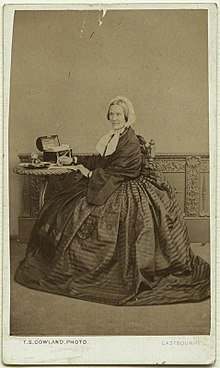

Mälukaartidest, mälukaartide ajaloost ja uuringutest
Mälukaart on kaart, mille mõlemal küljel on teave ja mis on mõeldud kasutamiseks meeldejätmisel. Iga mälukaardi ühel küljel on küsimus ja teisel pool vastus. Mälukaarte kasutatakse sageli sõnavara, ajalooliste kuupäevade, valemite või mis tahes teema õppimiseks. Mälukaardid võivad olla virtuaalsed või füüsilised. Mälukaartide kasutamine võib olla väga tõhus meeldejätmisviis. Isegi mälukaartide tegemine on hea viis teabe memoreerimiseks, pannes teid mõtlema, milline teave on ühel pool ja mis on seotud kirjeldus teisel küljel. See vabastab ka natuke mälu, kuna selle asemel, et püüda salvestada oma mõtetesse üksikuid fakte, nimesid või termineid, on teil füüsiline pakk kaarte koos teabega. Kordamine aitab teil aru saada, millist teavet saate hõlpsasti meelde jätta ja mis vajab täiendavat pingutust. Ajahalduse seisukohast võimaldavad mälukaardid lisaks planeeritud õppesessioonidele kasutada ära lühikest aega, mis on saadaval kogu päeva või nädala jooksul. (Loe rohkem).
Pabermälukaarte on kasutatud vähemalt 19. sajandist saadik, mõned on pidanud esimesteks mälukaartideks inglise koolitaja Favell Lee Mortimeri foonikakaartide komplekti Reading Disentangled (1834). 1923. aastaks oli mälukaartide kasutamine nii levinud, et see termin ilmus esmakordselt Oxfordi inglise keele sõnaraamatusse. Ajakirjades müüdi kaubanduslikult toodetud mälukaarte erinevatel teemadel, alates helitehnikast ja õigekirjast kuni matemaatikani, ning üle riigi koolide õpilasi julgustati neid abimaterjalina koostama. Enamik nõustub, et mälukaardid levivad vastusena kasvavale nõudlusele kvaliteetsema hariduse järele keskmise vaesemate õpilaste jaoks, kui pakuti ülerahvastatud ja alapersonaliga riigikoolides, mida juhivad alakvalifitseeritud õpetajad. Õpilased, kes ei saanud endale isegi ühte raamatut lubada, said endale lubada mälukaarte, mis võimaldasid neil väljaspool ametlikku klassiruumi lihtsalt iseseisvalt õppida.
415 psühholoogia sissejuhatuse kursuse bakalaureuseõppe üliõpilast teatasid vabatahtlikult, et nad kasutasid välkkaarte kolmel eksamil, samuti vastasid teistele mälukaartide kasutamisega seotud küsimustele (nt millal õpilane esimest korda välkkaarte kasutas). Peaaegu 70% klassist kasutas mälukaarte õppida ühe või mitme eksami jaoks. Kõigil kolmel eksamil välkkaarte kasutanud õpilastel olid üldiselt eksamitulemused oluliselt kõrgemad kui neil õpilastel, kes ei kasutanud mälukaarte üldse või kasutasid neid ainult ühel või kahel eksamil.